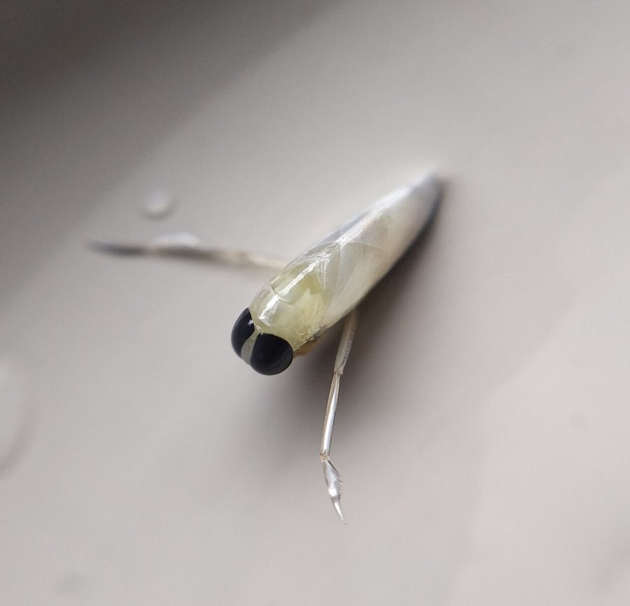

बैकस्विमरBackswimmer
Anisops · Notonectidae · INS-0108

- Scientific name वैज्ञानिक नाम
- Anisops Spinola, 1837
- Family कुल
- Notonectidae
- Hindi हिंदी
- बैकस्विमर
- Local names स्थानीय नाम
- backswimmer, back swimmer, bakswimmer
- Status here यहाँ की स्थिति
- native
- Movement आवागमन
- Resident, here all year
- IUCN IUCN
- not evaluated
- Review समीक्षा
- audited and independently read
When to look कब देखें
Present all year. साल भर मौजूद।
Uses and possibilities उपयोग और संभावनाएँ
Drawn from the documented uses in the profile below, where each is labelled traditional, current or a research lead. All uses →
Tell it apart from इनसे अलग पहचानें
बैकस्विमर / Backswimmer
Anisops Spinola, 1837 — Notonectidae
बैकस्विमर — तालाब की पानी की सतह के नीचे, पीठ के बल तैरने वाली एक छोटी, चपटी, हल्की बीटल जैसी बग। यह पिछले दोनों पैरों को चप्पू की तरह चलाती है और सिर नीचे, पेट ऊपर को तैरती है — इसीलिए "बैकस्विमर"। इसका पेट हवा का एक बुलबुला पकड़ रखता है जो चाँदी जैसा चमकता है। मच्छर के लार्वे (डेंगू के!) को यह खाती है, पर अपने आप को भी काट सकती है अगर तुम्हारी उँगली पानी में डालो।
Quick Identification त्वरित पहचान
| Feature | Description |
|---|---|
| Size | Body length 5–16 mm depending on species |
| Shape | Streamlined, dorsoventrally flattened |
| Colour | Brown to dark brown on the dorsal surface; ventral surface (underside) paler |
| Legs | Hindmost pair broad, flattened, fringed with hairs — like oars; other legs shorter |
| Eyes | Large compound eyes on the side of the head |
| Activity | Swims upside-down; ventral surface facing the water surface where light enters |
| Behaviour | Floats passively, then hunts with rapid lunges |
Field tip: In a pond or tank, an insect swimming upside-down with its belly towards the surface, legs rowing like oars, is a backswimmer. The ventral surface has a silvery sheen from an air film. It hunts among floating plants and in open water.
हिंदी — कैसे पहचानें: तालाब में पानी की सतह के नीचे, पीठ के बल तैरते हुए; पिछली टाँगें चप्पू जैसी; पेट पर चाँदी जैसी हवा का परत।
Morphology आकारिकी
Biometrics (genus Anisops, Indian species):
| Measurement | Range |
|---|---|
| Body length | 5–16 mm |
| Body width | 3–8 mm |
| Hind leg length | 4–10 mm |
Structure: Body streamlined, with the dorsum (back) convex and the ventrum (belly) flattened. The ventral surface is covered with fine hydrophobic setae that trap an air film, giving a silvery appearance. Head small, with large compound eyes placed laterally; the mouthparts are a needle-like rostrum folded beneath. Thorax and abdomen merged into an ovoid form. The hind legs are highly modified as paddles, with expanded tibiae and tarsi fringed with long natatorial setae; the middle legs are shorter; the front legs are shortest and used for prey manipulation.
Species of the region: The genus Anisops includes some 40 species worldwide, with several recorded from India and the Indo-Gangetic plain, but detailed identification requires characters of the male genitalia and is not attempted in this genus-level profile.
हिंदी: शरीर तेल के साबुन जैसा चिकना, पीठ उठी, पेट समतल और चाँदी जैसी हवा की परत से ढका। आँखें बड़ी; मुँह की सूई जैसी चोंच। पिछली टाँगें चप्पू जैसी, बाकी छोटी।
Behaviour & Ecology व्यवहार और पारिस्थितिकी
An aquatic ambush predator, swimming upside-down in the water column and hanging from the meniscus. The upside-down posture is an adaptation for hunting; by facing downward, the backswimmer is positioned to see and attack prey — small fish, tadpoles, insect larvae and other arthropods — approaching from below against the light. The air film on the ventral surface not only provides buoyancy but also allows gas exchange through spiracles. The insect returns periodically to the surface to renew the air supply.
Backswimmers are predatory on mosquito larvae (Culex, Anopheles) and have been suggested as biological control agents. However, they are themselves eaten by larger fish, aquatic birds, and dragonfly nymphs, and they will also prey on young fish in nursery ponds.
हिंदी: पीठ के बल तैरते हुए शिकार देखते हैं। मच्छर के लार्वे खाते हैं, छोटी मछलियाँ भी खा लेते हैं। बड़ी मछलियाँ और जलकौये इन्हें खाते हैं।
Life Cycle / Phenology जीवन चक्र
| Month / season | Event |
|---|---|
| March–May | Adults active and feeding as water warms |
| April–September | Mating; females lay eggs in the tissues of aquatic plants or on submerged substrates |
| 1–3 weeks | Eggs hatch; nymphs are smaller versions of adults |
| 2–3 months | Nymphs undergo five instars, growing with each molt |
| September–October | New adults emerge; some disperse by flying to new water bodies |
| November–February | Most active individuals remain in the water; fewer records in cold months |
Host Plants or Prey आहार
Adults and nymphs feed on:
- Mosquito larvae (Culex, Anopheles, Aedes)
- Chironomid larvae (midges)
- Mayfly nymphs
- Small crustaceans
- Small fish fry
- Other aquatic insect nymphs
Predators / Natural Enemies शत्रु
- Fish: rohu, catfish, and other pond fish; also aquatic insectivores
- Amphibians: frogs and toads
- Aquatic insects: dragonfly nymphs, large diving beetles, giant water bugs
- Birds: herons, kingfishers, pond fowl
- Parasites: mites and possibly parasitoid wasps
Agricultural / Human Relevance कृषि प्रासंगिकता
Mosquito control. Backswimmers are voracious predators of mosquito larvae and are considered beneficial for public health. In areas with high mosquito burden, they reduce larval density in breeding sites. However, they are not selective and will eat any small aquatic prey.
Fish farming. In nursery ponds, backswimmers may prey on fish fry, but in grown ponds they are of minor concern. Their presence indicates active aquatic fauna.
Traditional and Ethnobotanical Use: none recorded for the region.
Today. A beneficial aquatic predator; generally left undisturbed in ponds. A mild nuisance in water-filled containers.
Research direction (a lead, not a result). The use of aquatic hemipterans as biocontrol agents for mosquito larvae is an active field of research in India; the relative efficiency of Anisops versus dragonfly nymphs and diving beetles is not well established for eastern UP.
हिंदी: मच्छर के लार्वे इसका मुख्य भोजन हैं। नर्सरी में छोटी मछलियाँ भी खा लेता है। पर ज़्यादा तर तालाबों में इसे रहने दिया जाता है।
Expected Locally स्थानीय रूप से अपेक्षित
Not a field record. Written from published accounts for eastern Uttar Pradesh. No confirmed local sighting yet — if you have seen it, that is what the atlas needs.
अभी तक स्थानीय पुष्टि नहीं। यह विवरण प्रकाशित स्रोतों से है, किसी अवलोकन से नहीं।
Expected in ponds, tanks, and flooded fields throughout Basti district. Any still or slow-moving body of water with aquatic vegetation is a likely habitat. Most easily seen in spring when water warms and activity peaks. A photograph or specimen showing the inverted swimming posture and air film is a confirmed record.
Distribution वितरण
Global range: The genus is worldwide in tropical, subtropical and temperate zones; Anisops is distributed throughout Asia, Africa, and Australasia.
In India: Widespread in all states; common in the Indo-Gangetic plain.
In Uttar Pradesh: Present in all water bodies suitable for aquatic insects.
In Basti district / eastern UP: Expected in every pond and tank with vegetation.
Research Questions शोध प्रश्न
- How many backswimmers are in a village pond, and how does the number change with the season? / एक तालाब में कितने होते हैं? — Dip-net at intervals through the year.
- How many mosquito larvae can one backswimmer eat in a day? — Keep one in a jar with known larvae.
- How long does the air film last underwater, and how often must it surface? / यह पानी में कितने देर रह सकता है? — Watch with a hand lens.
- Does it prefer standing water or flowing channels? — Count in different water types.
- Do backswimmers bite humans, and if so what is the effect? / क्या यह मनुष्य को काटता है? — Investigate local reports and test carefully if safe.
Similar Species मिलती-जुलती प्रजातियाँ
| Species | How to tell apart | हिंदी | |
|---|---|---|---|
| [[water_scorpion\ | Water scorpion]] (Laccotrephes maculatus) | Longer and thinner; swims head-down with a long breathing tube projecting from the tail; more slowmoving | पूँछ पर लंबी सूई; सिर नीचे तैरता है |
| Diving beetles (Cybister, Dytiscus) | Hard-bodied, shiny black; legs fringed but not modified as oars; swim head-first | कड़ा, काला; सिर पहले तैरता है | |
| Water boatmen (Corixidae) | Smaller, more flattened; swim right-side up; front legs adapted for filter feeding | पेट के बल, सिर ऊपर; छोटा |
Field rule: An insect swimming upside-down with its belly towards the light, legs rowing, with a silvery air film visible on the ventral surface, is a backswimmer.
Taxonomy & Classification वर्गीकरण
Original description. The genus was established by Spinola in 1837 in Essai sur les Insectes Hémiptères, with species not yet clearly separated. Detailed taxonomy requires examination of male genitalia, and this profile is at genus level.
Subspecies. Not applicable at genus level.
Family and order placement. Notonectidae (backswimmers), a family within the Hemiptera (true bugs), suborder Heteroptera. The Notonectidae are sister to the Nepidae (water scorpions); both are highly adapted for aquatic life.
Phylogenetic notes. The upside-down swimming behaviour and the specialization of the hind legs as paddles are derived characters; Anisops is a highly specialized genus adapted for the predatory lifestyle.
IUCN status rationale. Not evaluated at genus level; no Indian Anisops species has been formally assessed.
Photo Gallery फोटो गैलरी
Photos needed आवश्यक फोटो
- [ ] Backswimmer swimming upside-down in water (पीठ के बल तैरता हुआ)
- [ ] Ventral view showing air film (नीचे की ओर से)
- [ ] Among aquatic plants in a pond (पानी के पौधों में)
No photos yet — add field photos to media/species/backswimmer/ and run node scripts/sync_photos.js.
References संदर्भ
- Spinola, M. (1837). Essai sur les Insectes Hémiptères, ordonnés en familles naturelles. Fain & Thunot, Paris. [genus]
- Distant, W.L. (1906). The Fauna of British India, including Ceylon and Burma. Rhynchota, vol. 3. Taylor and Francis, London.
- Bourne, G.C. (1901). Notes on the aquatic Hemiptera of the Indian region. Journal of the Asiatic Society of Bengal 70: 167–195.
- Thirumalai, G. (2007). A synoptic list of Nepomorpha (Hemiptera: Heteroptera) from India. Records of the Zoological Survey of India, Occasional Paper 273: 1–84.
- Murrell, A. & Barker, S.C. (2005). Phylogenetic analyses of the Hemiptera, with emphasis on the Phthiraptera, based on two nuclear loci. Molecular Phylogenetics and Evolution 37: 861–873.
- GBIF Occurrence Data — Anisops, India (2026).
Source file: species/fauna/insects/backswimmer.md